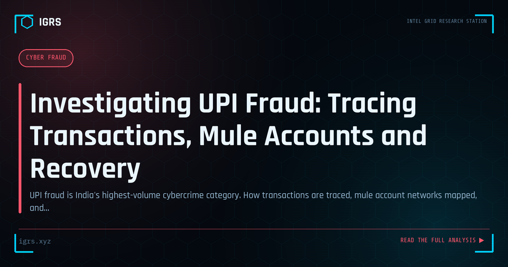

Investigating UPI Fraud: Tracing Transactions, Mule Accounts and Recovery
| File No. | IGRS-018/2026 |
| Subject | Investigation methodology for UPI payment fraud cases in India |
| Category | Cyber Fraud |
| Author | Manuj Kumar Pandey |
| Published | 2026-04-14 |
| Reading time | 11 minutes |
UPI fraud is India's highest-volume cybercrime category. How transactions are traced, mule account networks mapped, and funds frozen — from the investigator's perspective.
The Scale of UPI Fraud in India
India's Unified Payments Interface (UPI) processes over 18 billion transactions every month as of 2026, making it the backbone of the country's digital economy. But this scale has a dark side: UPI fraud is now the single largest category of cybercrime financial loss in India. According to data from the Indian Cyber Crime Coordination Centre (I4C), UPI-linked fraud accounts for the majority of complaints received on the National Cyber Crime Reporting Portal and the 1930 helpline.
For investigators, cyber cells, and bank fraud teams, understanding the complete UPI fraud investigation methodology is no longer optional — it is a core competency. This guide walks through the full lifecycle: how fraud happens, how the transaction trail is traced, how mule account networks are mapped, and how funds are frozen and recovered.
UPI Fraud Typologies: How the Scams Actually Work
Before you can investigate UPI fraud, you need to recognize the modus operandi. The major typologies seen across Indian jurisdictions are:
| Fraud Type | How It Works | Red Flag |
|---|---|---|
| Collect Request Scam | Fraudster sends a "collect" request disguised as a payment; victim approves and loses money | "Approve to receive money" — UPI never requires PIN to receive |
| QR Code Fraud | Victim scans a QR believing they will receive money, but scanning authorizes a debit | Scanning a QR never credits your account |
| Vishing / Screen Share | Fake bank/support call convinces victim to install AnyDesk/TeamViewer, then drains account | No bank asks you to install remote-access apps |
| Fake Payment Confirmation | Seller shown a forged "payment successful" screenshot, ships goods, never receives money | Always verify credit in your own bank app |
| UPI Reversal / "Wrong Transfer" | Money "accidentally" sent, then victim pressured to refund via a collect request that debits more | Refund only through your bank, never via a new request |
The common thread across all these scams: the fraudster manipulates the victim into authorizing the transaction themselves, which makes recovery legally and technically harder. This is why UPI fraud investigation focuses heavily on the money trail rather than the point of compromise.
The Transaction Trail: UTR is Your Primary Handle
Every UPI transaction generates a Unique Transaction Reference (UTR) number — a 12-digit identifier that is the single most important forensic handle in any UPI fraud investigation. The UTR ties together the sender's Virtual Payment Address (VPA), the recipient's VPA, the transaction amount, the precise timestamp, and the Payment Service Provider (PSP) banks on both ends.
This data is retained by the National Payments Corporation of India (NPCI) and all participating banks as a regulatory requirement. The investigative power of the UTR is that it cannot be faked or altered — it is generated at the network level.
The first investigative step in any case is to obtain the UTR from the victim. It appears in the victim's bank statement, UPI app transaction history, and SMS alerts. Once you have the UTR, you can:
- Identify the exact beneficiary account and IFSC where funds landed
- Serve a legal notice (Section 94 BNSS) on the recipient bank for KYC disclosure
- Request a lien or hold on the beneficiary account
- Map the onward movement of funds if they were already transferred out
The 1930 Freeze Mechanism: The Golden Hour
The single most important factor in UPI fraud recovery is speed. The National Cyber Crime Helpline (1930) is integrated with the Citizen Financial Cyber Fraud Reporting and Management System, which connects directly to banks and payment intermediaries.
When a victim calls 1930 within minutes of the fraud, the helpline operator can push a freeze request to the beneficiary bank before the fraudster withdraws or layers the money. This is often called the "golden hour" of cyber fraud response.
| Time to Report | Approximate Recovery Probability |
|---|---|
| Within 1 hour | High (60-70%) |
| 1-6 hours | Moderate |
| 6-24 hours | Low |
| After 24 hours | Very low — funds usually layered out |
For investigators, this means victim education and rapid first response are as important as the technical investigation. Every minute of delay reduces the probability of freezing funds in the first-layer mule account.
Mule Account Networks: Following the Money
Modern UPI fraud rarely ends at a single account. Organized fraud syndicates use layered mule account networks to launder proceeds and obscure the trail. Understanding this structure is essential for investigators who want to reach the organizers, not just the disposable foot soldiers.
The typical three-layer mule structure works like this:
- Layer 1 — Collector accounts: Where victim money first lands. These are often opened by recruited mules using genuine KYC, then handed over to the syndicate.
- Layer 2 — Buffer accounts: Funds are rapidly split and forwarded across multiple accounts to break the trail and defeat simple freezing.
- Layer 3 — Cash-out accounts: Money is finally withdrawn via ATMs, converted to cryptocurrency, or routed to the organizers, often across state lines.
The investigative technique here is link analysis: take the first beneficiary account, obtain its statement via legal process, and map every onward transaction. Each onward account becomes a new node. Tools like Maltego and bank-provided transaction dumps help visualize the network. Patterns emerge — the same buffer accounts servicing multiple frauds, the same devices logging into many accounts, the same recruitment source.
Device and Phone Intelligence in UPI Cases
Beyond the money trail, UPI fraud investigations rely heavily on device and phone OSINT. The phone number registered to a mule account, the device ID used to access mobile banking, and the SIM registration data all provide attribution.
Key techniques include:
- TAFCOP lookup: Check how many SIMs are registered against the mule's Aadhaar at sancharsaathi.gov.in — syndicates often use mule SIMs.
- CDR analysis: Request Call Detail Records to map the mule's contacts and tie them to the recruiter.
- Device fingerprinting: Banks log the device ID and IP for each mobile banking session — the same device across multiple mule accounts is strong evidence of a coordinated network.
- VPA pattern analysis: The handle suffix (@oksbi, @ybl, @paytm) reveals the PSP, and the prefix often contains phone numbers or names useful for correlation.
Linking Job Fraud to UPI Mule Recruitment
One of the most valuable investigative insights is that most mule account holders are recruited through fake job advertisements promising easy work-from-home income. Victims are told to "receive and forward payments" for a commission, unknowingly becoming money launderers.
This means a UPI fraud investigation often connects to a job fraud investigation. By tracing how a mule was recruited — the Telegram channel, the WhatsApp group, the fake company — investigators can reach the organizing layer that recruits dozens or hundreds of mules. This pivot from money trail to recruitment trail is frequently what cracks an entire syndicate.
Building a Court-Ready UPI Fraud Case
Technical tracing is only half the job. The investigation must produce evidence that survives legal scrutiny under Indian law. The key legal provisions for UPI fraud are:
| Section | Act | Offence |
|---|---|---|
| Section 318 | BNS 2023 | Cheating (replaced IPC 420) |
| Section 319 | BNS 2023 | Cheating by personation |
| Section 66C | IT Act 2000 | Identity theft |
| Section 66D | IT Act 2000 | Cheating by personation using a computer resource |
| Sections 3 & 4 | PMLA 2002 | Money laundering (for organized mule networks) |
Critically, all electronic evidence — bank statements, transaction logs, device records, CCTV from cash-out ATMs — must be accompanied by a Section 63 BSA 2023 certificate (formerly Section 65B of the Indian Evidence Act). This certificate authenticates the electronic record and is essential for admissibility. Hash values (SHA-256) should be computed for all digital evidence at the time of collection to prove integrity.
Recovery and Victim Compensation
When funds are successfully frozen, the recovery process moves through the legal system. The victim, armed with the cybercrime complaint number and FIR, can petition the court for release of frozen funds. Under RBI guidelines on limited liability, banks may also bear responsibility where their security controls failed.
For investigators, documenting the freeze timeline, the legal notices served, and the chain of custody is what ultimately allows the court to order restitution to the victim. A technically brilliant investigation that lacks proper documentation will fail at the recovery stage.
Prevention: What Investigators Should Advise the Public
Part of the investigator's role is prevention messaging. The core public advisories that reduce UPI fraud are simple but powerful:
- You never need to enter your UPI PIN to receive money — only to send it.
- Scanning a QR code never credits your account; it only authorizes a debit.
- No legitimate bank or support team asks you to install remote-access apps like AnyDesk or TeamViewer.
- Verify every incoming payment in your own bank app, never trust a screenshot.
- If defrauded, call 1930 immediately — the first hour is decisive.
UPI fraud investigation in India is a race against time and a test of methodical money-trail analysis. The investigators who combine rapid first response, disciplined link analysis, sound device intelligence, and court-ready documentation are the ones who recover funds and dismantle the syndicates behind the screen.
Case Study: Anatomy of a Real UPI Fraud Investigation
Consider a representative case that illustrates the full methodology. A victim in Delhi receives a call from someone claiming to be from their bank's fraud department, warning of a suspicious transaction. The caller, using urgency and authority, convinces the victim to install a screen-sharing app to "verify" their account. Within minutes, three transactions totalling Rs 2.4 lakh are pushed out of the victim's account.
The investigation unfolds as follows. First, the victim calls 1930 within forty minutes — fast, but not instant. The helpline pushes freeze requests to the three beneficiary banks. Two of the three first-layer accounts are frozen with partial balances intact; the third has already been emptied. Next, the investigating officer obtains the three UTRs and serves Section 94 BNSS notices on the beneficiary banks for KYC and statements.
The KYC reveals the accounts belong to three different individuals across two states — classic mule profiles. Statement analysis shows the money from the emptied account was split into seven onward transfers within eleven minutes, a hallmark of an organized layering operation. Device logs from the banks show two of the mule accounts were accessed from the same Android device ID — concrete evidence linking otherwise unrelated mules to a single operator.
CDR analysis on the mule phone numbers reveals frequent contact with a single number that does not belong to any mule. That number, traced through TAFCOP and CDR, leads to the recruiter who onboarded the mules through a fake "data entry job" Telegram channel. The pivot from money trail to recruitment trail transforms a three-victim case into a syndicate takedown.
Common Investigation Mistakes to Avoid
Even experienced teams make errors that weaken UPI fraud cases. The most damaging mistakes include:
- Delaying the freeze request while gathering "complete" information — partial information is enough to freeze; speed beats completeness.
- Failing to collect the Section 63 BSA certificate at the time of evidence collection, making bank records inadmissible later.
- Ignoring device fingerprint data that banks hold, which is often the strongest link between mules.
- Treating each mule as an isolated accused rather than mapping the network to reach organizers.
- Not computing hash values for digital evidence, allowing the defence to challenge integrity.
Tools and Resources for UPI Fraud Investigation
The practical toolkit for UPI fraud investigators in India combines official portals and analytical tools:
| Resource | Use |
|---|---|
| 1930 / cybercrime.gov.in | Rapid freeze and complaint registration |
| TAFCOP (sancharsaathi.gov.in) | SIM-to-Aadhaar verification for mule attribution |
| NPCI dispute system | Transaction verification and chargeback |
| Maltego | Link analysis and network visualization |
| Bank nodal officers | KYC, statements, device logs via legal notice |
| IGRS Dashboard | IOC lookup, hash generation, quick references |
Mastery of UPI fraud investigation comes from running cases end to end: recognizing the typology, racing the freeze, mapping the mule network, applying device and phone intelligence, pivoting to recruitment, and packaging everything as court-admissible evidence under the BNS, IT Act, and PMLA framework.